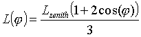

Welcome to the daylighting variations-project.
This Internet page shows the impact of daylight-openings on spaces. It is part of a new project in which a design tool is being developed based on detailed daylighting simulations.
On the left and right edges of the screen you will find icons showing the various solutions that have been calculated so far. After selecting on the left and right two of these icons the corresponding results for each solution are shown in the middle so they can be easily compared. For each variation several views are offered (see below). An overview of all variations is available here. The variations are ordered by the number of room-surfaces that the window(s) connect to.
The area of the daylight opening is equal in all variations except for the one where the window connects to four surfaces (A_4). In this case the whole façade is transparent. The area of the window openings has been chosen as 10% of the floor area of the room. The room is a ‘standard office room’ of 3.6 x 5.4 x 2.7 m (W x D x H). The reflection factors of the surfaces are: Wall reflectance = 0.7, Ceiling reflectance is 0.8, and Floor reflectance = 0.2. All surfaces are assumed to be perfectly diffuse reflectors.
The sky luminance distribution is modeled as a CIE standard overcast sky. This is a common design situation. It gives an impression of the room under minimal daylighting conditions. It also excludes the effect of direct sunlight. Future work will deal with other sky conditions.
The CIE overcast sky describes a sky condition with a relative
bright zenith and a luminance that decreases towards the horizon.
This is described by the equation:

(phi is the angle towards the viewing direction from the zenith)